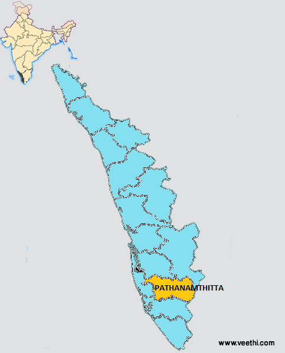

PATHANAMTHITTA

Pathanamthitta, is a municipality situated in the Central Travancore region in the state of Kerala, India, spread over an area of 23.50 km2. It is the administrative capital of Pathanamthitta district. The town has a population of 37,538. The Hindu pilgrim centre Sabarimala is situated in the Pathanamthitta district; as the main transport hub to Sabarimala, the town is known as the 'Pilgrim Capital of Kerala'. Pathanamthitta District, the thirteenth revenue district of the State of Kerala, was formed with effect from 1 November 1982, with headquarters at Pathanamthitta. Forest covers more than half of the total area of the District. Pathanamthitta District ranks the 7th in area in the State. The district has its borders with Allepey, Kottayam, Kollam and Idukki districts of Kerala and Tamil Nadu.
Agriculture is the main occupation of the people. About 75% people are dependent on this sector. Rubber is the most important crop, with its plantations covering over 478 square kilometres (185 sq mi). The hilly terrain coupled with high humidity makes the region suitable for rubber plantations. Paddy is the most important crop cultivated in the wet lands. Tapioca and pulses are the important dry land crops. Other major crops are coconut, banana, pepper and ginger. In certain areas cashew, pineapple, sugarcane, cocoa and other tree spices are cultivated. The land available for cultivation is less since sizeable area of the district is reserve forest.